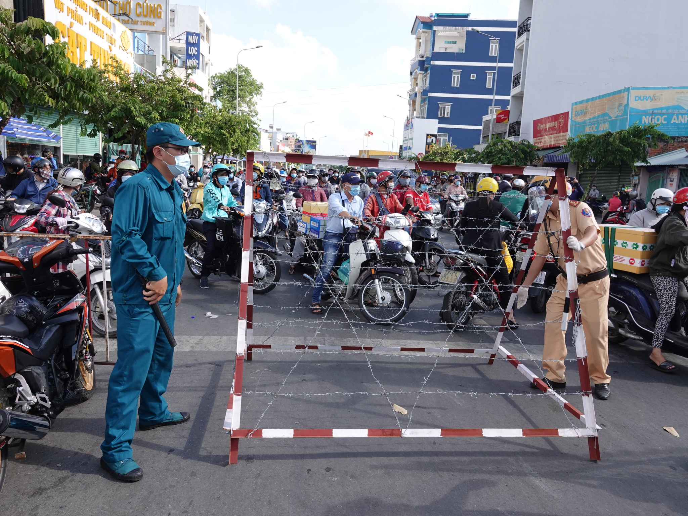
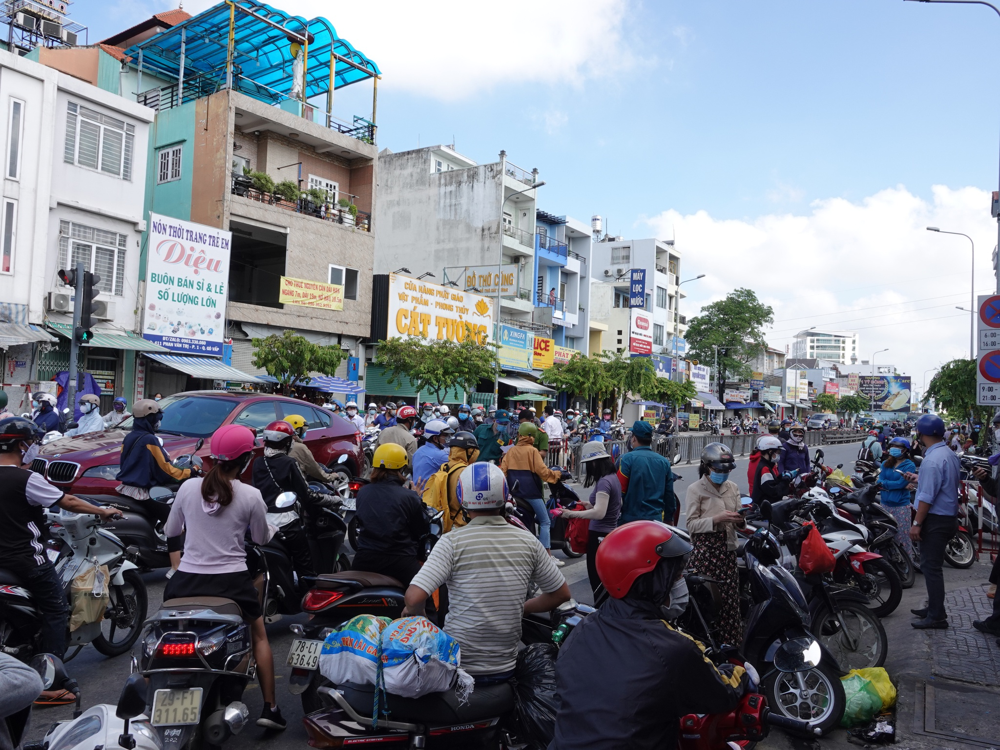
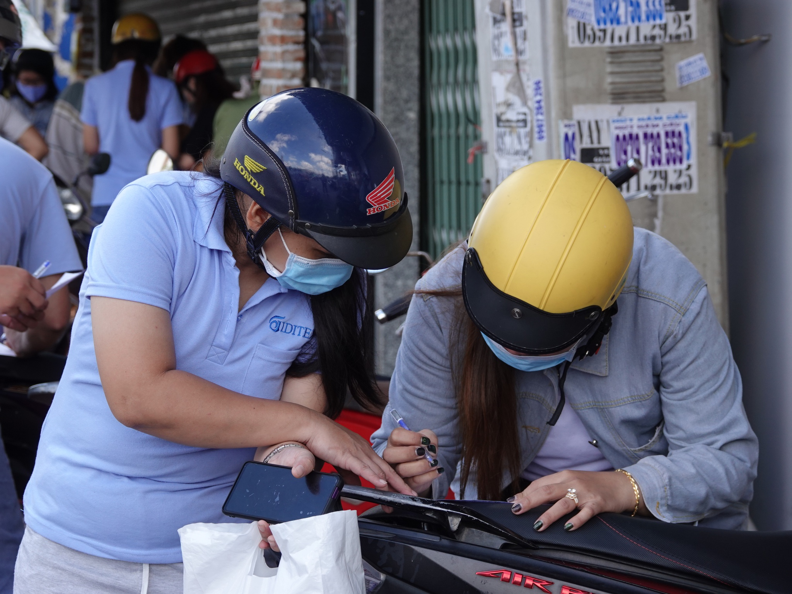
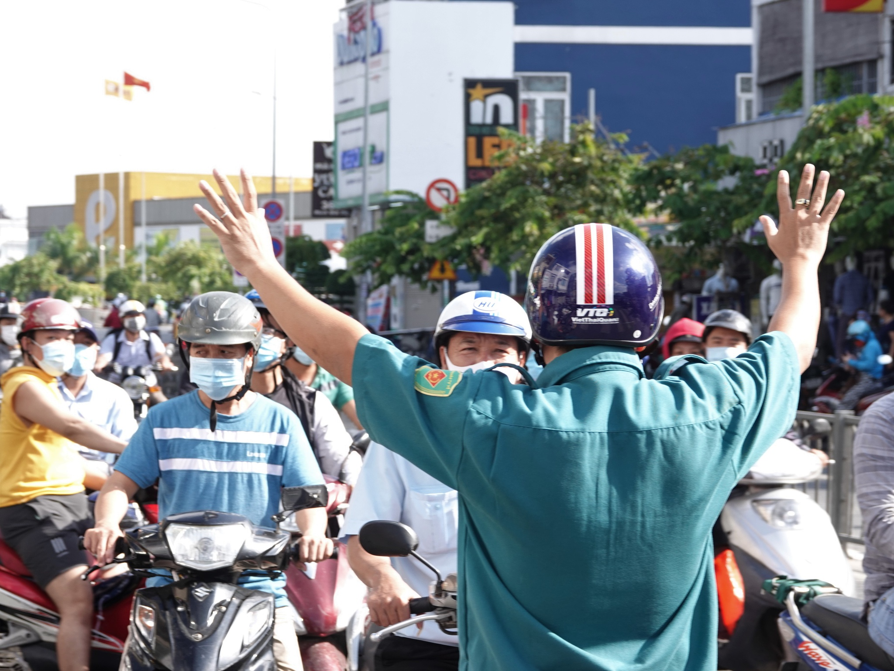

Q.Gò Vấp tạm thời giải tỏa các chốt kiểm soát để lên phương án cụ thể, giảm thiểu ảnh hưởng đến người dân, doanh nghiệp nhưng vẫn tuân thủ các quy định phòng dịch Covid.19 khi TP.HCM đang tiến hành giãn cách xã hội.
Chốt kiểm soát phương tiện giao thông trên đường Phan Văn Trị (Q.Gò Vấp, TP.HCM) vào sáng ngày 31.5 - ẢNH: SỸ ĐÔNG
Cuối giờ trưa 31.5, lãnh đạo UBND Q.Gò Vấp (TP.HCM) cho biết địa phương này đang tạm gỡ các chốt kiểm soát ra vào địa bàn quận, trong bối cảnh TP đang triển khai giãn cách xã hội.
Trước đó, trong sáng 31.5, tại Gò Vấp đã triển khai các chốt kiểm soát để đảm bảo công tác phòng dịch Covid-19 theo Chỉ thị 16.
Tuy nhiên, điều này dẫn đến tình trạng ùn ứ cục bộ, ảnh hưởng đến công việc của người dân và doanh nghiệp. Do đó, Q.Gò Vấp tạm thời gỡ chốt để giải phóng phương tiện, tránh tập trung đông người trong buổi sáng.
Hiện Q.Gò Vấp đang phối hợp với các cơ quan chuyên môn xây dựng văn bản hướng dẫn cụ thể cho lực lượng thực thi công vụ. Chiều tối nay (31.5), quận sẽ tổ chức lại việc kiểm soát y tế và người, phương tiện ra vào quận theo quy định.
Lãnh đạo UBND Q.Gò Vấp cũng đề nghị người dân khai báo y tế trước khi lưu thông vào địa bàn quận để tránh ùn tắc tại các chốt kiểm soát giao thông.
Ùn tắc cục bộ trên đường Phan Văn Trị vào sáng ngày 31.5 - ẢNH: SỸ ĐÔNG
Ghi nhận của PV Thanh Niên vào lúc 10 giờ ngày 31.5, chốt kiểm soát phương tiện trên đường Phan Huy Ích (Q.Gò Vấp) đã được tạm gỡ, người dân đi lại bình thường. Cũng trong sáng cùng ngày, dòng xe lưu thông từ đường Phan Văn Trị và Phạm Văn Đồng (Q.Bình Thạnh, TP.HCM) vào Q.Gò Vấp bị chặn ngay chốt kiểm soát giao thông trên đường Phan Văn Trị (Q.Gò Vấp).
Nhiều công nhân cư trú ở Q.Gò Vấp làm việc ở Q.Bình Thạnh được hướng dẫn khai báo y tế. “Mấy bạn thanh niên nói điền đầy đủ thông tin vào tờ khai y tế rồi nộp lại, chiều làm xong quay về giải quyết tiếp”, một công nhân nộp vội tờ khai y tế rồi đi làm nhưng vẫn thấp thỏm chiều có được về lại nhà hay không?
Người dân được hướng dẫn khai báo y tế - ẢNH: SỸ ĐÔNG
Từ trên vỉa hè tràn xuống lòng đường, tiếng gọi điện thoại ra rả với cùng nội dung: “Bên ngoài chặn rồi, vào được nhưng không ra được”. Đây cũng là câu giải thích của cán bộ phường, dân quân tự vệ và công an khi người dân hỏi có được vào bên trong Q.Gò Vấp hay không.
Trao đổi với PV Thanh Niên, một chủ tịch phường ở Q.Gò Vấp cho biết phường khuyến cáo người dân không ra khỏi nhà. Vị này cho biết sáng cùng ngày, lãnh đạo một ngân hàng trên địa bàn gọi điện hỏi ngân hàng có được hoạt động hay không nhưng phường đành “khất” thêm một ngày chờ hướng dẫn cụ thể từ quận và thành phố.
Trong chiều tối nay, Q.Gò Vấp sẽ có hướng dẫn cụ thể để người dân và doanh nghiệp thuận tiện trong công việc hằng ngày - ẢNH: SỸ ĐÔNG
Theo kế hoạch, UBND Q.Gò Vấp cho biết dự kiến lập 10 chốt kiểm soát dịch tại: cầu thép An Phú Đông, cầu An Lộc, cầu Bến Phân, cầu Trường Đai, cầu Chợ Lớn, trước số 399 Tân Sơn (P.12), đường Phan Huy Ích, ngã tư Phan Văn Trị - Phạm Văn Đồng, đường Lê Quang Định (P.1), đường Phạm Văn Đồng - công viên Hoàng Minh Giám.
Từ ngày 31.5, TP.HCM giãn cách xã hội theo Chỉ thị 15/2020 của Thủ tướng; riêng Q.Gò Vấp và P.Thạnh Lộc (Q.12) giãn cách xã hội theo Chỉ thị 16/2020 của Thủ tướng theo nguyên tắc: gia đình cách ly với gia đình, tổ dân phố cách ly với tổ dân phố, khu phố cách ly với khu phố, phường cách ly với phường; phân xưởng, nhà máy sản xuất phải bảo đảm khoảng cách an toàn, đeo khẩu trang, thực hiện khử trùng, diệt khuẩn theo quy định.
Tin Liên Quan